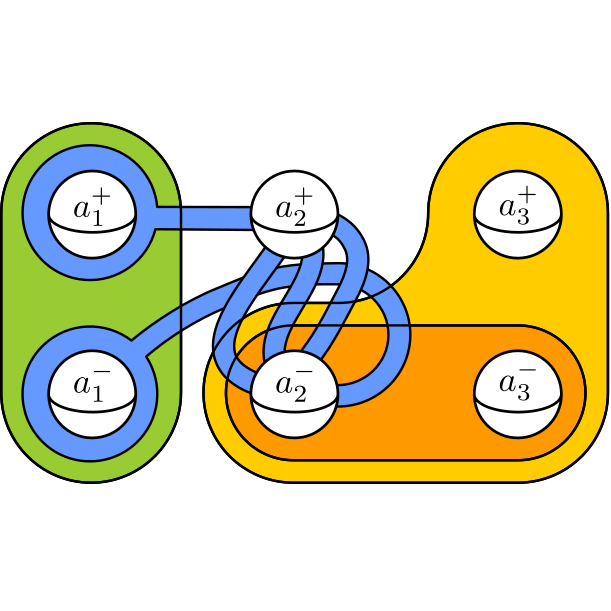
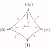

Combinatorial models for surface and free group symmetries. PhD diss., Georgia Institute of Technology, 2018, hdl.handle.net/1853/60722.

Exact computation of the n-loop invariants of knots. Experimental Mathematics. 25. 2 (2016). Garoufalidis, Sabo, and Scott.
Computing the partial word avoidability indices of ternary patterns. Combinatorial Algorithms. IWOCA (2012). Lecture Notes in Computer Science, vol 7643. Springer, Berlin, Heidelberg. Blanchet-Sadri, Lohr, and Scott.
Computing the partial word avoidability indices of binary patterns. Journal of Discrete Mathematics 23 (2013). Blanchet-Sadri, Lohr, and Scott.
Delay control in attosecond pump-probe experiments. Optical Express 17.24 (2009). Chini, Mashiko, Wang, Chen, Yun, Scott, Gilbertson, and Chang.